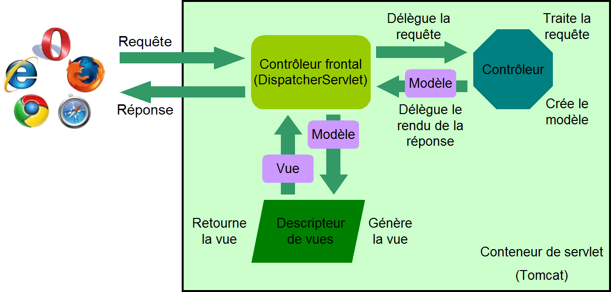

Introduction à Spring MVC
Formation des développeurs
Romain Warnan
## 1
### Spring core : rappels
### Spring core
Spring core : conteneur qui implémente le *pattern* « inversion de contrôle » (IoC)
Définitions des objets (*bean*)
- XML : `applicationContext.xml`
- Annotations
- Stéréotypes : `@Component`, `@Service`, `@Repository`, `@Controller`…
- Injection : `@Autowired`, `@Resource`, `@Value`…
- Configuration : `@Configuration`
### Spring core
Au démarrage de l’application, chargement du contexte
Web : *listener*
```xml
<context-param>
<param-name>contextConfigLocation</param-name>
<param-value>classpath:applicationContext.xml</param-value>
</context-param>
<listener>
<listener-class>org.springframework.web.context.ContextLoaderListener</listener-class>
</listener>
```
Batch : de manière explicite en Java
```java
try(AbstractApplicationContext context = new ClassPathXmlApplicationContext("applicationContext.xml")){
Service service1 = (Service) context.getBean("beanName");
Service service2 = context.getBean(Service.class);
Service service3 = context.getBean("beanName", Service.class);
}
```
### Beans et injection des dépendances
En XML
```xml
<bean id="cacheManager" class="org.springframework.cache.ehcache.EhCacheCacheManager">
<property name="cacheManager" ref="ehcache" />
</bean>
<bean id="ehcache" class="org.springframework.cache.ehcache.EhCacheManagerFactoryBean">
<property name="configLocation" value="classpath:ehcache.xml" />
</bean>
```
### Beans et injection des dépendances
Par annotation, version `@Autowired`
```java
@Repository
public class AdresseDaoImpl implements AdresseDao {
```
```java
@Service
public class AdresseServiceImpl implements AdresseService {
@Autowired
private AdresseDao adresseDao;
```
Par annotation, version `@Resource`
```java
@Repository("adresseDao1")
public class AdresseDaoImpl implements AdresseDao {
```
```java
@Service
public class AdresseServiceImpl implements AdresseService {
@Resource(name = "adresseDao1")
private AdresseDao adresseDao;
```
### Activer la détection des annotations
```xml
<context:component-scan base-package="fr.insee" />
```
### Injection d’une source de propriétés
Pour externaliser des propriétés non surchargeables par le C.E.I.
Sinon, utiliser `InseeConfig`
```
prefix.key.a=Valeur A
prefix.key.b=Valeur B
```
```java
@Component
@PropertySource("classpath:application.properties")
public class ComponentImpl {
@Value("${prefix.key.a}")
private String a;
```
## 2
### Spring MVC : généralités
Classement des frameworks web en 2017
### Dépendances Maven
```xml
<dependency>
<groupId>org.springframework</groupId>
<artifactId>spring-webmvc</artifactId>
<version>${spring.version}</version>
</dependency>
<dependency>
<groupId>javax.servlet</groupId>
<artifactId>javax.servlet-api</artifactId>
<version>3.1.0</version>
<scope>provided</scope>
</dependency>
<dependency>
<groupId>javax.servlet.jsp</groupId>
<artifactId>jsp-api</artifactId>
<version>2.2</version>
<scope>provided</scope>
</dependency>
<dependency>
<groupId>jstl</groupId>
<artifactId>jstl</artifactId>
<version>1.2</version>
</dependency>
```
Modèle MVC
Modèle – Vue – Contrôleur

### Le contrôleur frontal : ServletDispatcher
Toutes les requêtes sont interceptées par la même servlet
ServletDispatcher, fournie par Spring MVC
1. intercepte la requête
2. délègue la requête au contrôleur adéquat
3. récupère le modèle
4. transmet le modèle au générateur de vue
5. récupère la vue générée
6. retourne la réponse au client
La servlet possède son propre contexte Spring
### Déclarer la servlet ServletDispatcher
```xml
<servlet>
<servlet-name>servlet-dispatcher</servlet-name>
<servlet-class>org.springframework.web.servlet.DispatcherServlet</servlet-class>
<init-param>
<param-name>contextConfigLocation</param-name>
<param-value>classpath:servlet-dispatcher.xml</param-value>
</init-param>
<load-on-startup>1</load-on-startup>
</servlet>
<servlet-mapping>
<servlet-name>servlet-dispatcher</servlet-name>
<url-pattern>/</url-pattern>
</servlet-mapping>
```
Attention : « / » et pas « /* »